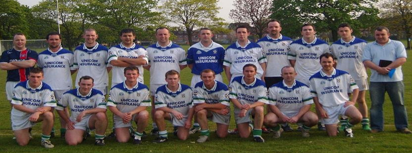

North London Shamrocks History

The North London Shamrocks GFC was formed in 2005 by an amalgamation of St Theresa’s of Ponders End and Shannon Rovers/Sam Maguires of Wood Green. Tom Galvin, Ollie Cormac and Tom Kilcommons brought about the successful amalgam ation of the neighbouring clubs to ensure that North London continued to have a GAA football club. The new club was named North London Shamrocks and now competes at intermediate level in both league and championship.
The club is honoured to have Joe Lynch as its president. Speaking about the club Joe said: “I would like to welcome everyone into the club. I am extremely honoured to be president of the club having being involved in GAA all my life. My wish is for the club to nurture and promote the aim and ideas of our great association and also bring through tomorrows footballers via our underage structure. So in years to come we will have a strong and vibrant GAA club in North London”.
The club has a long history dating back to 1967 when St Theresa’s GAA club was first formed by Joe Lynch and others. The club won numerous cups, shields and league titles and competed for several years at senior grade in both league and championship. Sam Maguire GAA club was based in Holloway Road and was formed in the early 1980’s by Mick Cafferkey and Kevin Lavelle. The club competed at intermediate level, winning various cups and shields. Shannon Rovers GAA club was formed in 1982 by Brendan Dooley, John Coleman and others. The club was based in Wood Green and won the intermediate championship in 1994. Unfortunately following this fruitful period, player numbers dwindled and it was agreed at a joint AGM in 1996 that the two clubs would merge forming Shannon Rovers/Sam Maguires. The club went on to win the Intermediate League, Shields Cup, Murphy’s Cup and most notably the Championship in 2002 captained by Michael Higgins. After a drop in player numbers in 2005 the club amalgamated with St Theresa’s to ensure that players from both clubs were able to continue playing Gaelic Football in their local area.